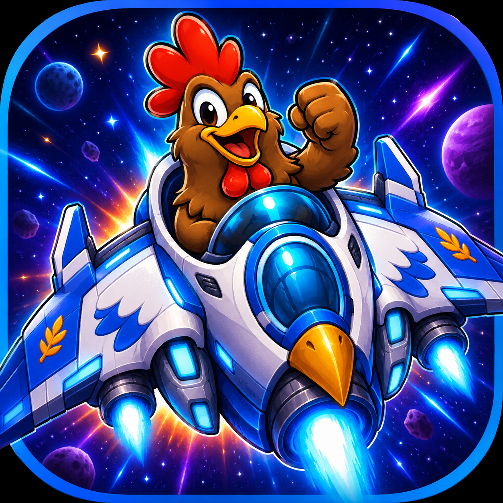

Featured Game
Chicken Flapper II: Never Ending Journey
PREVIEW BUILDA cosmic chicken arcade shooter built for quick fun and high scores.
Blast off into a fast, colourful vertical arcade shooter where chickens, spaceships, golden eggs, power-ups, bosses, and chaos collide.
Overview
Never-ending arcade action
Pilot your chicken-powered starfighter through waves of enemy ships, collect golden eggs, grab powerful upgrades, survive intense boss battles, and launch into Hyperdrive bonus runs as the journey gets faster, stranger, and more explosive.
With vibrant space backdrops, arcade-style action, special power-ups, shield boosts, spread shots, screen-clearing bombs, and late-game super weapons, Chicken Flapper II is built for quick fun, high scores, and classic shoot-em-up energy.
The game also features a wonderful original soundtrack that brings the adventure to life--a bright, energetic theme that gives the whole game its sense of motion, excitement, and never-ending journey through space.
Simple to play, hard to master, and packed with personality, Chicken Flapper II is a cosmic chicken adventure made for players who love old-school arcade action with a modern mobile twist.
Preview Features
- Fast vertical arcade shooter action
- Enemy ship waves and boss battles
- Golden eggs, power-ups, shields, bombs, and spread shots
- Hyperdrive bonus runs
- Original energetic soundtrack
- Preview browser build